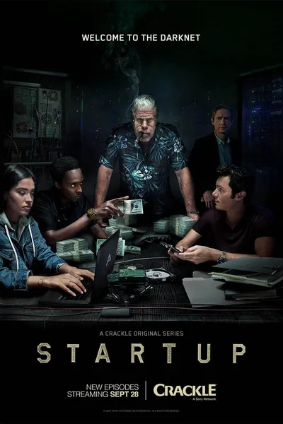

Сериал · 2016 · Криминал, Триллер
Драма о независимой цифровой валюте, которую три незнакомца — финансист, гангстер и программист — запускают вне банков и вне правил, чтобы деньги перестали принадлежать структурам, разрушившим их жизни. Чем дальше идёт их криптокомпания, тем ближе подбираются ФБР, венчурные деньги и те, кто считает электронную свободу угрозой режиму. Мрачный триллер о деньгах нового поколения и о цене, которую платят за веру в них.
A drama about an independent digital currency launched by three strangers — a financier, a gangster and a developer — outside any bank and any rule, so money stops belonging to the structures that destroyed their lives. The further their crypto company goes, the closer come the FBI, venture money and those who consider electronic freedom a threat to the state. A gritty thriller about a new generation of money and the price of believing in it.
← Вернуться в каталог IT Movies